Four integrated platforms, a field app and a multi-tenant console, all on one shared data layer. Built for every stage of the electoral cycle, from the first voter scan to the final result.
Know exactly who walked through the door, and what that means for your campaign.
Built for rallies, aspirant forums and internal party gatherings. Upload your guest list, scan national IDs at the entrance, and get a real-time political picture of every attendee. Organisers see not only how many people attended, but how many are registered to vote in the relevant electoral area.
Scans the national ID at the entrance and confirms the attendee against the register and the loaded guest list.
Resolves name, sex, date of birth and registered location: county, constituency, ward and polling centre.
Lightweight Know-Your-Customer verification of the attendee's details against trusted records.
Check-ins, unique attendees and out-of-region share, updating instantly with every scan.
Region-restricted events flag attendees registered outside the area without blocking them.
Only IDs on the uploaded participant list can check in. Everyone else is blocked at the gate.
| Message | What it means |
|---|---|
| Ready to check in | The voter was found. Confirm their details and tap Check in. |
| Already checked in | Checked in earlier today. The app shows when and by whom, so nothing is double-counted. |
| Outside this region | Registered outside the event area. Check-in is still allowed and flagged in analytics. |
| Not on the list | For list-only events, the ID isn't on the approved participant list. |
| Can't look up | A permission or connection problem. Confirm assignment to the event and retry. |
Replace anecdotal estimates with ID-verified, defensible field data.
A campaign-period tool for door-to-door and community mobilization. Each appointed mobilizer gets credentials and uses the app to register the voters they engage. Every registration is attributed to the mobilizer who recruited them, producing a transparent record of performance against target.
Mobilizers register voters by ID during outreach. A voter can only be mobilized once per organization.
Every registration is linked to the mobilizer who recruited them, giving accountability across the field team.
Per-mobilizer counts and a Top Mobilizers leaderboard show high performers and areas that need support.
Set a registration goal per region and track Mobilized, Remaining and Progress to target.
Days left, voters still needed and the pace per day required to finish on time.
Registrations captured without signal sync automatically when the connection returns.
Moving faster than needed. Hold the line.
Current pace reaches the goal in time.
Pick up the pace to finish on time.
The goal is hit for this scope.
The operational backbone of election day. Total visibility from command to individual polling stations.
The most comprehensive platform in the MachineNova suite. It manages the full chain of command, from the workspace owner down to individual polling-station agents, and captures and aggregates results as they are reported from the field.
One election is active at a time and scopes every screen. Drafts and past elections sit alongside it.
Pick MP and every constituency holds a race; pick MCA and every ward does. Custom positions are supported too.
Candidates can be added or replaced while the election is live, per position and region.
The official register of polling stations and parties is a read-only reference, picked during setup.
Open, Reporting, Closed or Issue, set by agents and visible instantly. Uncovered stations are surfaced too.
Assign agents to a station from the ward pool. Call or WhatsApp them in one tap.
Cumulative turnout recorded at 7, 9, 11 AM, 1, 3 and 5 PM, checked against registered voters.
KIEMS kit failure, ballot shortage, security concern, absent agent or intimidation. The station is flagged and the admin notified.
Votes per candidate plus rejected ballots, entered from the signed Form 37A and cross-checked against recorded turnout.
Leader, share and reporting progress per race, drilling down from county to constituency, ward and station.
Turnout versus the scope average, combined with who leads, signals where to push get-out-the-vote.
Scrub or play back archived election days hour by hour, with lead changes and key events.
Swipe through the workspace. Tap any screen to enlarge it.
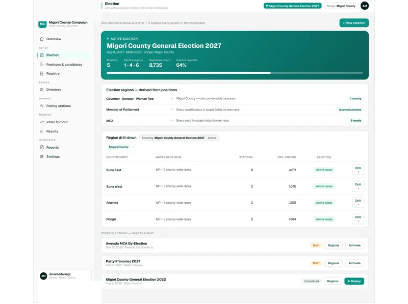
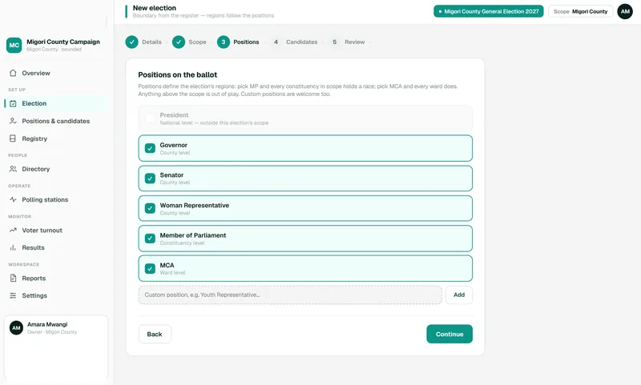
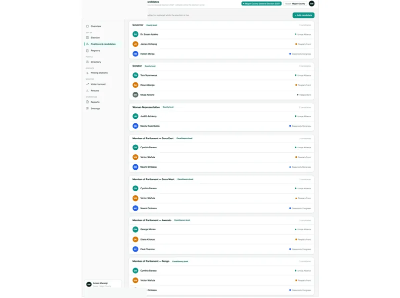
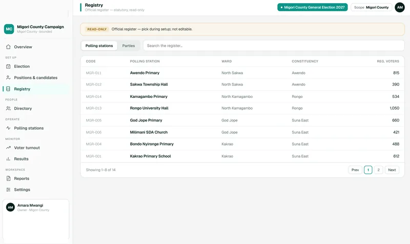
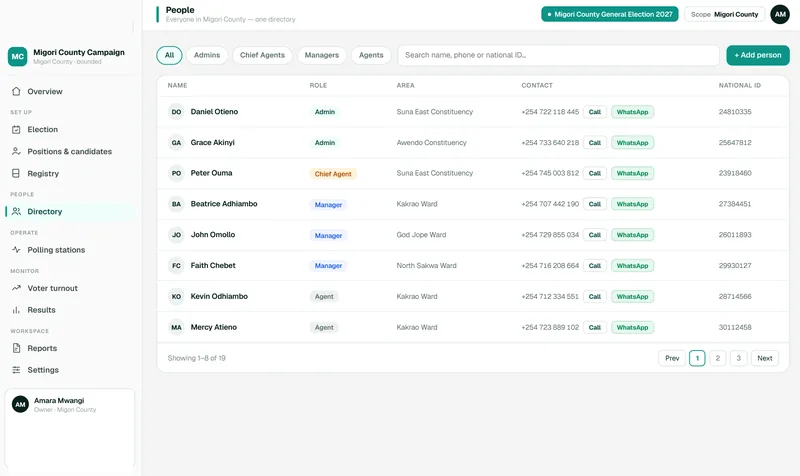
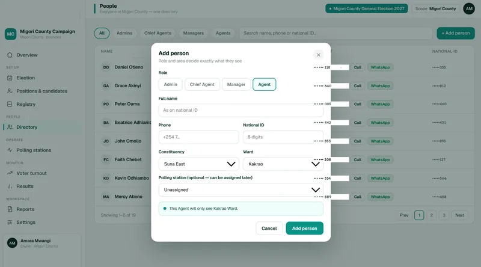
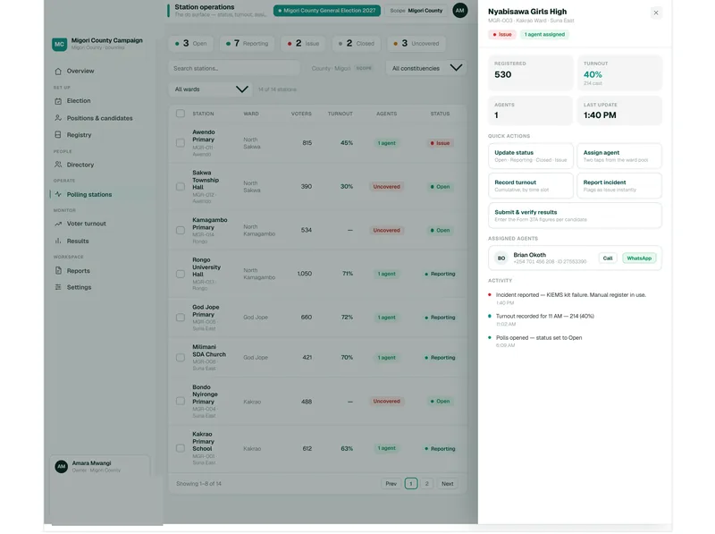
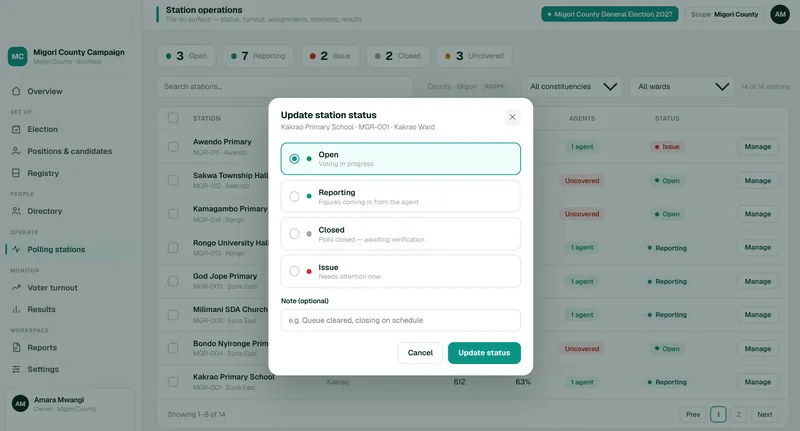
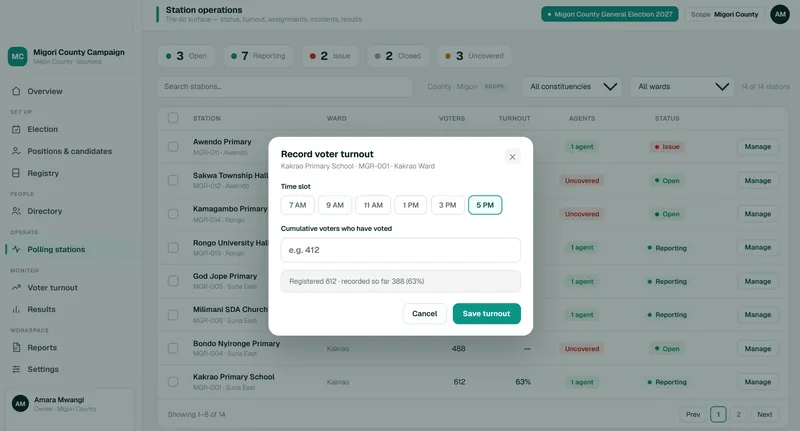
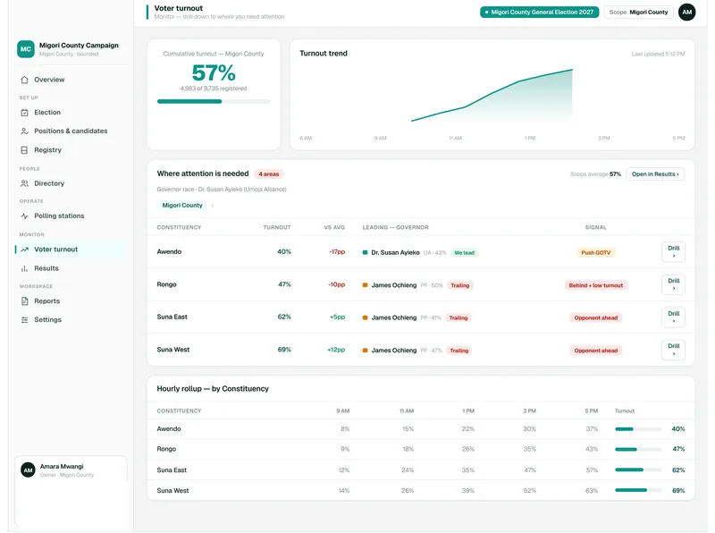
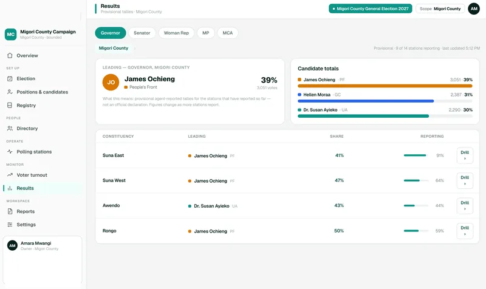
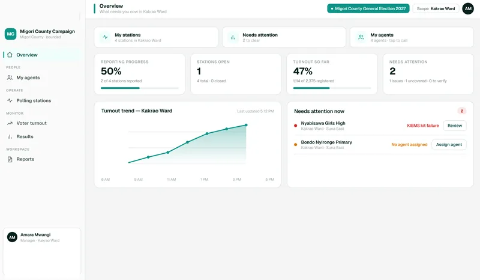
Strategic intelligence that informs campaign planning and election-day strategy.
Alongside the operational platforms, MachineNova offers a research and analytics capability. The team runs surveys and processes voter registration and demographic data to produce regional intelligence, and every operational number feeds the same picture.
Quantifies, by region, how many citizens are registered to vote and how many remain unregistered.
Gender mix, top age group and the community dynamics relevant to political strategy.
Check-ins against the people available, drilled down by constituency, ward or polling centre.
Low-coverage areas surfaced automatically, so effort goes where it does the most good.
Historical replays and real-time turnout to identify high-priority areas for mobilization.
Structured surveys to gather voter sentiment and political preference data at scale.
| Status | What it means |
|---|---|
| Strong | Coverage is high. This area is in good shape. |
| Moderate | Decent coverage, with room to grow. |
| Low | Coverage is thin and worth more attention. |
| Critical | Very low coverage. A priority to push. |
| Not started | No activity here yet. |
The Android field app for door-to-door work and on-site check-ins: big tap targets, ID scanning and offline support. Four tabs (Home, People, Insights, Account) and one colour rule: teal means check-in, amber means mobilize.
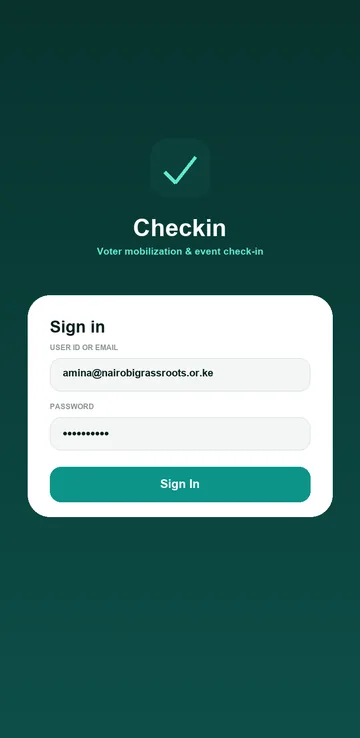
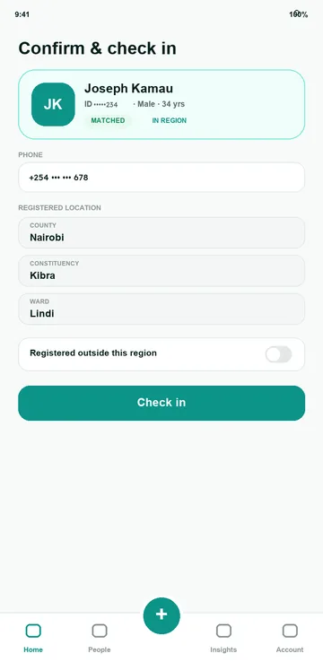

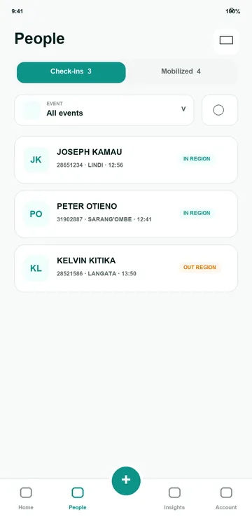
Mobilization and check-in keep working without signal and sync later.
Hit targets are never smaller than 44px. Dialogs become bottom sheets within thumb reach.
Downloaded from inside your organization's dashboard after sign-in, with no public app-store listing.
Run many campaigns and observer missions on one platform, each in its own branded, geographically bounded workspace.
Every organization is bounded to a geography from day one, whether a county or a single constituency, and everything inside it is scoped to that boundary. Members simply sign in, with no subdomains to configure.
See every tenant's members, stations, agents and status (Active, Trial or Inactive) from one console.
Organization, boundary, branding, first admin, review. A new workspace is ready in minutes.
Organization name, accent color and sign-in screen, applied live to the sidebar, buttons and charts.
Agent invites, daily turnout digests, password resets and results announcements, with merge fields.
Templates use merge fields such as {{{{org_name}}}}, {{{{election_name}}}}, {{{{recipient_name}}}}, {{{{turnout_pct}}}} and {{{{sign_in_link}}}}. Organizations can override the platform library.